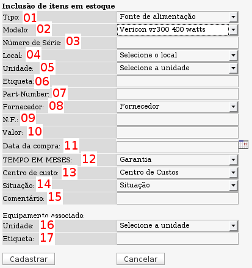

Cadastro de Componentes Avulsos (Inventário -> Cadastrar -> Componente avulso)
Um componente avulso é qualquer componente físico e passível de identificação única que possa ser agregado a um equipamento.
Ex: placa de rede, HD, leitor biométrico, placa PLC, etc...
Nessa tela é possível cadastrar componentes que já existem fisicamente (assim como o
cadastro de equipamento) em estoque ou agregados a algum equipamento.

Tela de cadastro de itens avulsos - versão 2.0rc3
01 - Campo Tipo: aqui deve ser selecionado o tipo de componente a ser cadastrado. Caso o tipo desejado não exista ainda, basta cadastrá-lo em Admin -> Inventário -> Componentes
02 - Campo Modelo: campo para seleção do modelo do componente a ser cadastrado. Para cadastrar modelos, acesse através da tela de cadastro de equipamentos no botão "Incluir Componente" ou através da listagem geral de componentes avulsos no botão "Incluir modelo de componente".
03 - Número de série do componente.
04 - Local onde o componente está alocado. Para saber mais sobre locais, acesse a
página sobre o assunto.
05 - Unidade do componente. Entenda o funcionamento deste campo na
página sobre o assunto.
06 - Etiqueta de identificação do componente. Caso o componente possua alguma etiqueta com valor único de identificação.
07 - Part-Number do componente.
08 - Selecione aqui o fornecedor do componente. Para cadastrar fornecedores acesse o menu Admin -> Inventário -> Fornecedores.
09 - Número da nota fiscal de compra do componente. Útil para os casos de acionamento de garantia.
10 - Valor de compra do componente.
11 - Data de compra. O OcoMon se baseará na data de compra e no tempo de garantia para calcular o período de garantia do componente.
12 - Tempo em meses. Selecione aqui o tempo de garantia do componente. O OcoMon utilizará em informação juntamente com a data de compra para calcular o período de garantia do componente.
13 - Centro de Custo: Selecione o
centro de custo do componente.
14 - Selecione a situação do equipamento quanto ao seu estado de conservação. Para cadastrar situações acesse o menu Admin -> Inventário -> Situações.
15 - Comentário. Coloque aqui outras informações relevantes.
Os campos a seguir são relacionados ao equipamento em que o componente está agregado.
16 - Unidade: é a unidade do equipamento em que o componente está agregado.
17 - Etiqueta: é a etiqueta de patrimônio do equipamento em que o componente está agregado.